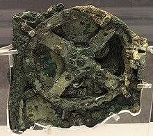
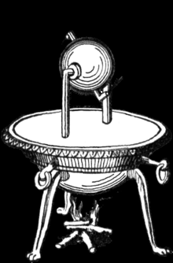
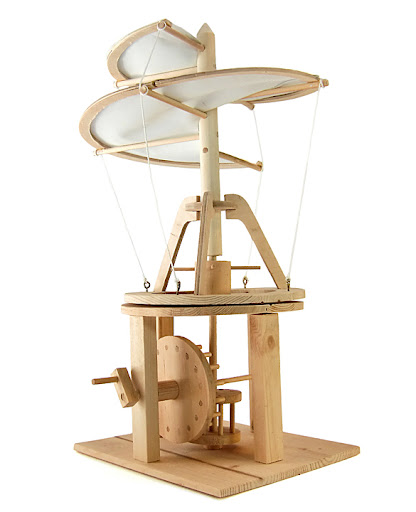

The Latency of Scientific Knowledge and Technological Application
By Marvin J. Largo | Published: September 22, 2024
Introduction
The relationship between theoretical advancements and their practical applications often spans decades, centuries, or even millennia. Historical examples demonstrate that theoretical insights and inventions can precede their practical utilization by significant time periods. This article explores several instances of such latency, reinforcing the argument that contemporary theoretical physics, despite seeming impractical now, may lead to groundbreaking applications in the future.
Case Studies of Delayed Application
1. Roman Concrete
The Romans developed a form of concrete known for its durability around the 3rd century BCE. However, after the fall of the Roman Empire, this knowledge was lost. It wasn't until modern research in the 20th century that Roman concrete's unique properties, particularly its ability to withstand harsh marine environments, were rediscovered. Today, this ancient technology is being studied for use in sustainable construction materials.
Source: Wikipedia - Pantheon, Rome
2. The Antikythera Mechanism
The Antikythera mechanism, an ancient Greek analog computer used to predict astronomical positions and eclipses, dates back to around 100 BCE. Rediscovered in a shipwreck in 1901, its complexity wasn't fully understood until the 20th century. Its sophisticated design was ahead of its time, with modern mechanical devices only catching up during the 14th to 16th centuries.
Source: Wikipedia - Antikythera mechanism
3. Heron's Steam Engine (Aeolipile)
Heron of Alexandria described the aeolipile in the 1st century CE, demonstrating how steam pressure could convert into mechanical motion. Practical use of steam power, however, didn't come until over 1,600 years later, during the Industrial Revolution, where it transformed industries.
Source: Wikipedia - Aeolipile
4. Leonardo da Vinci's Inventions
Leonardo da Vinci sketched numerous ideas centuries ahead of their time, including the aerial screw—a precursor to the modern helicopter. While he drew this concept in 1485, it wasn't until the 20th century that helicopters became a reality.
Modern Case Studies of Delayed Application
1. Quantum Mechanics
Quantum mechanics, developed in the early 20th century by scientists such as Max Planck and Albert Einstein, laid the groundwork for modern technologies like semiconductors, transistors, and quantum computing—decades after the theoretical foundations were first established.
2. General Relativity
Formulated by Albert Einstein in 1915, general relativity's practical applications weren't fully realized until the advent of technologies like GPS, which require its precision for accurate location tracking.
3. CRISPR-Cas9
First described in the late 1980s and early 1990s, CRISPR-Cas9 became a revolutionary tool for genetic engineering in the 2010s, changing medicine, agriculture, and biotechnology forever.
Future Potential: Particle Accelerators and Element Creation
Theoretical advancements in particle physics, particularly involving high-energy particle accelerators like the Large Hadron Collider (LHC) at CERN, hold immense potential for the future. Ongoing research in creating new elements and isotopes, or even replicating the processes powering stars through nuclear fusion, could revolutionize materials science and energy production.
Conclusion
Historical and contemporary examples illustrate the significant gaps that often exist between the discovery of scientific principles and their practical application. As seen with quantum mechanics, general relativity, and CRISPR, what may seem theoretical today could lead to transformative technologies tomorrow. Keeping a long-term perspective on scientific research is crucial for fostering innovation and progress.